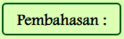
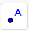
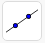
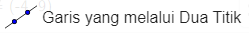
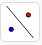
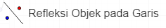

1. Tekan button pembahasan () untuk melihat penjelasan jawaban pada contoh soal
2. Isilah jawaban pada titik-titik dengan benar
3. Jika jawaban benar, kotak berwarna hijau
4. Jika jawaban salah, kotak berwarna merah
Refleksi terhadap garis \[y=x\] dan garis \[y=-x\]
Pembahasan :
Menggambar Refleksi terhadap sumbu \[y=x\]
Jika telah mengisi jawaban dengan benar, cobalah gambar translasi pada bidang kartesius di bawah ini.
Langkah-langkahnya sebagai berikut:
1. Membuat titik
a. Misal membuat titik A (0,0) dengan mengklik menu 
b. Arahkan kursor ke bidang kartersius pada titik (0,0)
c. Kemudian klik pada titik yang telah dipilih
d. Lakukan hal yang sama untuk titik yang lainnya.
2. Membuat garis sumbu \[y=x\]
a. Klik menu 
b. Pilih 
3. Membuat hasil bayangan dari refleksi
a. Klik menu 
b. Pilih 
c. Klik titik A
d. Kemudian klik garis sumbu \[y=x\]
4. Lakukan hal yang sama untuk titik yang lainnya
Pembahasan :
Menggambar Refleksi terhadap sumbu \[y=-x\]
Jika telah mengisi jawaban dengan benar, cobalah gambar translasi pada bidang kartesius di bawah ini.
Langkah-langkahnya sebagai berikut:
1. Membuat titik
a. Misal membuat titik A (0,0) dengan mengklik menu
b. Arahkan kursor ke bidang kartersius pada titik (0,0)
c. Kemudian klik pada titik yang telah dipilih
d. Lakukan hal yang sama untuk titik yang lainnya.
2. Membuat garis sumbu \[y=x\]
a. Klik menu
b. Pilih
3. Membuat hasil bayangan dari refleksi
a. Klik menu
b. Pilih
c. Klik titik A
d. Kemudian klik garis sumbu \[y=-x\]
4. Lakukan hal yang sama untuk titik yang lainnya